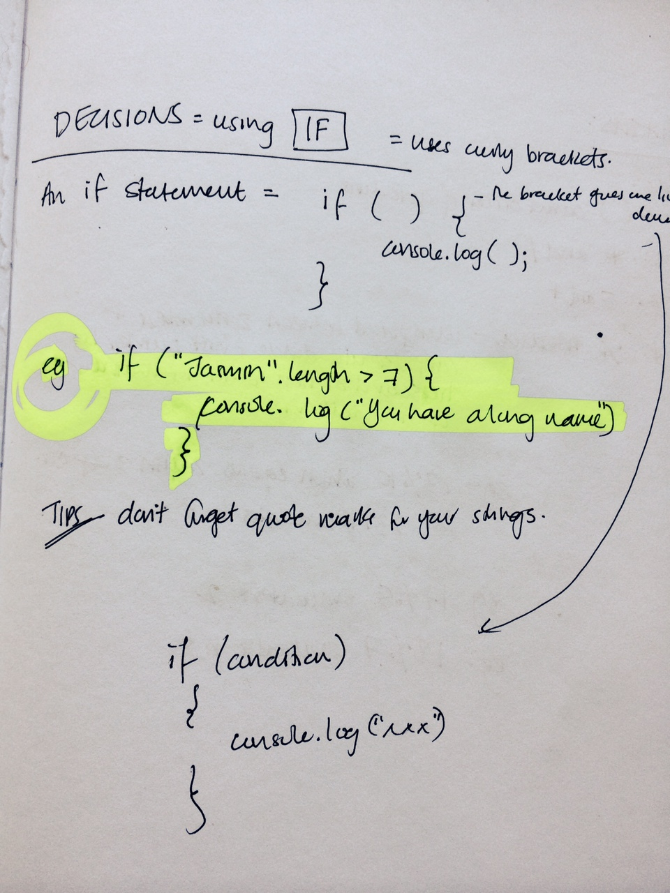
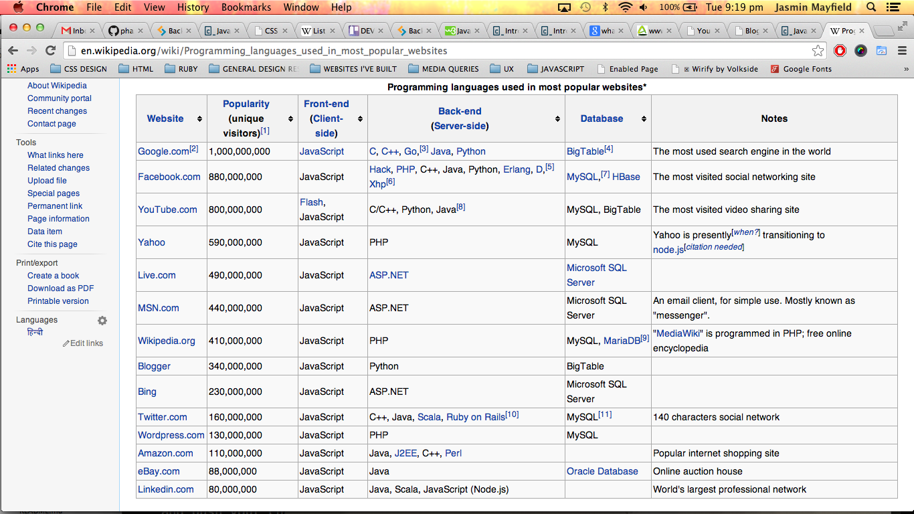

Triangles are my favorite shape. Three points where two lines meet.
Toe to toe, back to back, let's go, my love, it's very late.
JavaScript - The yay and the nay
JavaScript. A feature rich scripting program. If used "properly", you can achieve wondrous website effects and improve the experience for your end user. Like anything seemingly good there's always a downside. Let's take a closer look at the advantages and disadvantages, then you can make your own mind up.
"YAY" SIDE
- SPEED.Being client-side, JavaScript is very fast because any code functions can be run immediately instead of having to contact the server and wait for an answer. So really, this helps to relieve strain on the web server and we see our pages load FAST.
SIMPLICITY. We like simple. JavaScript is incorporated into your HTML file in the head section (typically, although you can include it in the body also). It is relatively simple to learn and implement as it mimics english fairly well. Check out the example below - the highlighted part reads "If Jasmin, who has a (name)length that's greater than 7, then print "You have a long name". Reading JavaScript as if it were english does certainly help in identifying what you are doing!
- VERSATILITY JavaScript plays nicely with other languages and can be used in a huge variety of applications. Unlike PHP or SSI scripts, JavaScript can be inserted into any web page regardless of the file extension. JavaScript can also be used inside scripts written in other languages such as Perl and PHP.
- SERVER LOAD Being client-side reduces the demand on the website server. Always a good thing!
Yin and yang. Mufasa vs Scar. Kristoff vs Prince Hans. Let's check out the "not so wondrous things related to JavaScript"...
"NAY" SIDE
- SECURITY. Because the code executes on the users' computer, in some cases it can be exploited for malicious purposes. This is one reason some people choose to disable JavaScript.
- RELIANCE ON END USER.JavaScript is sometimes interpreted differently by different browsers. Whereas server-side scripts will always produce the same output, client-side scripts can be a little unpredictable. Don't be overly concerned by this though - as long as you test your script in all the major browsers you should be sweet.
- CANNOT ACCESS DATABASES ...unless you use Ajax and have a server side script perform the database accesses for you.
- JAVASCRIPT CANNOT PROTECT YOUR PAGE SOURCE OR IMAGES. Any images on your web page are downloaded separately to the computer displaying the web page so the person viewing the page already has a copy of all of the images by the time they view the page. The same is true of the actual HTML source of the web page. The web page needs to be able to decrypt any web page that is encrypted in order to be able to display it. While an encrypted web page may require JavaScript to be enabled in order for the page to be able to be decrypted in order for it to be able to be displayed by the web browser, once the page has been decrypted anyone who knows how can easily save the decrypted copy of the page source.
SO WHAT DO YOU THINK?
Words from wise and knowledgable sites
- Over the next few years, JavaScript is poised to become the dominant language of the enterprise for IT - ultimately displacing the all-encompassing and highly pervasive C, C++ and Java languages. Wow!
- But that's not what wikipedia theory is saying! Warning: this is a pretty negative site.
- User experience. Think of all those big names with the most popular websites. What do they use? See for yourself below: 